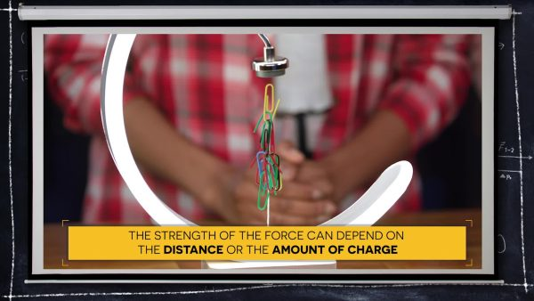
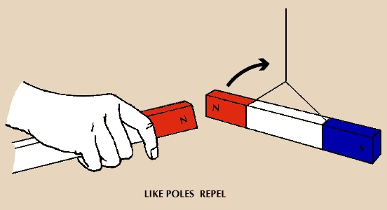
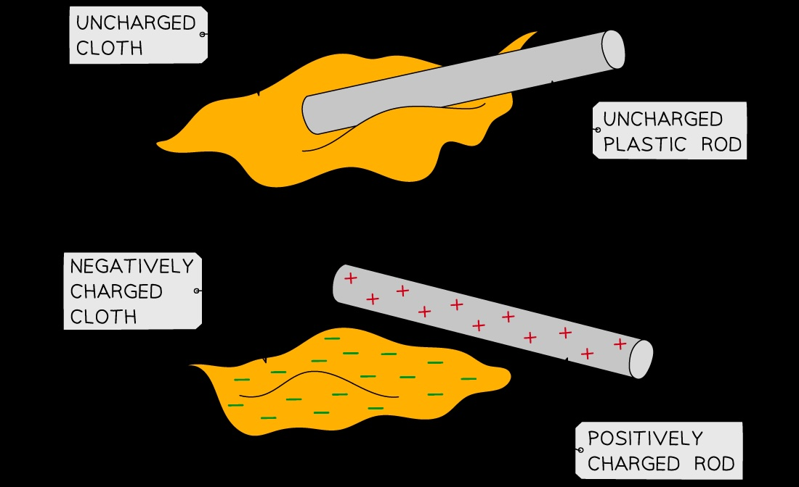

Electric and Magnetic Fields
Introduction to Fields and Forces
When we think about forces, we usually imagine one object physically pushing or pulling another through direct contact. However, some forces can act over a distance without any physical touching. These special forces are explained by the concept of fields.
A field is a region around an object that can attract or repel other objects within that area. The two main types we'll explore are electric fields and magnetic fields.

Demonstration showing how electromagnetic forces depend on both distance and charge amount
Key Concept: Fields allow objects to exert forces on each other without touching. Although we cannot see these fields directly, we can detect them by observing their effects on objects.
Magnetic Fields
Magnets have fascinating properties - they can attract or repel each other without even touching! This happens because magnets produce magnetic fields around themselves.
Magnetic Poles
Every magnet has two poles: a north pole and a south pole. These poles represent the points where the magnetic field is strongest. At the north pole, field lines diverge (spread out), while at the south pole, field lines converge (come together).

Demonstration showing how like magnetic poles (north-north) repel each other
Magnetic Attraction and Repulsion:
- Like poles repel: North-north or south-south poles push each other away.
- Opposite poles attract: North-south poles pull toward each other.
Magnetic Materials
Not all materials interact with magnets. Materials that are attracted to magnets are called ferromagnetic materials. The most common examples include:
- Iron
- Nickel
- Cobalt
- Steel (which contains iron)
Example: A refrigerator door is typically made of steel, which is why magnets stick to it. However, aluminum cans are not attracted to magnets because aluminum is not a ferromagnetic material.
Visualizing Magnetic Fields
Although we cannot see magnetic fields directly, we can visualize them using iron filings. When scattered near a magnet, each tiny iron filing becomes a temporary mini-magnet that aligns with the magnetic field lines. The pattern formed by these filings reveals the shape and strength of the magnetic field.
Try This! Magnetic Field Mapping
Place a bar magnet on a flat surface and sprinkle iron filings around it. Notice how the filings form curved lines from one pole to the other. These lines represent the magnetic field. Areas where the lines are densely packed show stronger field regions (usually near the poles).
Magnetic Field Strength
The strength of a magnetic field is not uniform throughout space. Several factors affect how strong the magnetic force will be:
Factors Affecting Magnetic Field Strength
- Distance: Magnetic field strength decreases as distance from the magnet increases. The closer an object is to a magnet, the stronger the force it experiences.
- Size of the magnet: When comparing two magnets made of the same material, the larger magnet will generally produce a stronger magnetic field.
- Material of the magnet: Different magnetic materials create fields of different strengths. For example, neodymium magnets create much stronger fields than ferrite magnets of the same size.
- Orientation: The alignment of magnets relative to each other affects the strength of their interaction. Magnets aligned pole-to-pole experience stronger forces than those oriented perpendicularly.
Check Your Understanding:
If you have two identical bar magnets and place them at different distances from a paper clip, which magnet will exert a stronger pull on the paper clip? Why?
Answer: The magnet placed closer to the paper clip will exert a stronger pull because magnetic force increases as distance decreases.
Electric Fields
Just as magnets create magnetic fields, objects with electric charge create electric fields around themselves. These fields exert forces on other charged objects.
Electric Charges
There are two types of electric charges:
- Positive (+) charge
- Negative (-) charge
Objects typically become charged through the transfer of electrons (negatively charged particles). When an object loses electrons, it becomes positively charged; when it gains electrons, it becomes negatively charged.

Illustration showing how like charges repel and opposite charges attract each other
Electric Attraction and Repulsion:
- Like charges repel: Positive-positive or negative-negative charges push each other away.
- Opposite charges attract: Positive-negative charges pull toward each other.
Creating Electric Charges
One common way objects become charged is through friction. When two different materials rub against each other, electrons can transfer from one material to the other.

Demonstration of how rubbing materials together can transfer electrical charge
Example: When you rub a balloon against your hair, electrons transfer from your hair to the balloon. This leaves your hair with a positive charge and gives the balloon a negative charge. The balloon can then stick to a wall because it induces an opposite charge on the wall's surface.
Electric Field Strength
Similar to magnetic fields, electric field strength is affected by:
- Distance: Electric field strength decreases as distance from the charged object increases.
- Amount of charge: Objects with greater charge create stronger electric fields.
- Distribution of charge: How the charge is spread across an object affects the shape and strength of its electric field.
Try This! Balloon Experiment
Inflate two balloons and hang them from strings. Rub both balloons against wool or your hair (the same material for both). Bring the balloons close to each other and observe what happens. They should repel each other because they've both acquired the same type of charge.
Two balloons with the same charge repelling each other due to static electricity
Electromagnets
An electromagnet is a special type of magnet where the magnetic field is produced by an electric current. Unlike permanent magnets, electromagnets can be turned on and off by controlling the electric current.
How Electromagnets Work
The simplest electromagnet consists of:
- A coil of wire (often copper)
- An electric current flowing through the wire
When electricity flows through a wire, it creates a magnetic field around the wire. By coiling the wire, these small magnetic fields combine to create a stronger field, similar to a bar magnet.

Visualization of the magnetic field created by a current-carrying coil (electromagnet)
Factors Affecting Electromagnet Strength
You can increase the strength of an electromagnet by:
- Increasing the current: More electric current flowing through the wire creates a stronger magnetic field.
- Adding more coils: Increasing the number of wire turns in the coil strengthens the magnetic field.
- Adding a core: Placing a ferromagnetic material (like iron) inside the coil significantly increases the magnetic field strength. Different materials create different strength increases, with neodymium cores producing some of the strongest electromagnets.
Check Your Understanding:
Which would produce a stronger electromagnet: a coil with 10 turns of wire carrying 2 amperes of current, or a coil with 20 turns of wire carrying 1 ampere of current?
Answer: Both configurations would produce the same magnetic field strength because strength depends on both the number of turns and the current strength. In this case, 10 turns × 2 amperes = 20 turns × 1 ampere.
Timing Control: In devices like coilguns, precise timing of when the electromagnet is turned on and off is crucial. When the current is turned on, the electromagnet attracts the metal projectile. The current must be turned off at the right moment to allow the projectile to continue moving forward rather than being pulled back toward the electromagnet.
Try This! Make a Simple Electromagnet
Materials needed: Insulated copper wire, a battery, and an iron nail.
Wrap the wire tightly around the nail, making multiple coils. Connect the ends of the wire to the battery terminals. Test your electromagnet by seeing if it can pick up paper clips. When you disconnect the battery, the magnetic field disappears.
Comparing Permanent Magnets and Electromagnets
| Permanent Magnets |
Electromagnets |
| Always magnetic |
Can be turned on and off |
| Fixed strength |
Adjustable strength (by changing current or coils) |
| Made of magnetic materials |
Made of wire coils (often with a metal core) |
| Strength depends on material and size |
Strength depends on current, coil turns, and core material |
Real-World Applications
Speakers and Headphones
Speakers use both permanent magnets and electromagnets to produce sound. Inside every speaker, there's a permanent magnet and a coil of wire that acts as an electromagnet when electric current flows through it.
Speaker array showing how electromagnets and permanent magnets work together to produce sound
When audio signals (which are varying electric currents) flow through the coil, the electromagnet's strength changes constantly. This causes the coil to be attracted to or repelled from the permanent magnet, making the attached speaker cone vibrate. These vibrations create sound waves that we hear as music or speech.
Increasing the strength of either magnet would result in louder sound production because it would create stronger forces and greater cone movement.
Laser Printers
Laser printers use electric fields to create images on paper. The process works like this:
- A laser creates a pattern of positive charges on a drum.
- Toner particles (which have a negative charge) are attracted to the positively charged areas of the drum.
- When paper (which is given a positive charge inside the printer) passes by, the negatively charged toner particles are attracted to it.
- Heat is applied to melt the toner particles, making them stick permanently to the paper.
This process demonstrates how opposite electric charges attract each other, allowing the negatively charged toner to stick to the positively charged paper surface.
Compasses
A compass contains a small magnetized needle that aligns with Earth's magnetic field. Because opposite poles attract, the north end of the compass needle actually points toward Earth's magnetic south pole (which is near the geographic North Pole).
Compasses have been used for navigation for centuries because of this reliable magnetic field interaction.
MRI Machines
Magnetic Resonance Imaging (MRI) machines use extremely powerful electromagnets to create detailed images of the human body. These machines apply a strong magnetic field that affects hydrogen atoms in the body, allowing medical professionals to see internal structures without using radiation.
Vocabulary Summary
| Term |
Definition |
| Field |
A region around an object that can attract or repel other objects in its area. |
| Force |
A push or pull between two objects. |
| Magnet |
An object or material that generates a magnetic field. |
| Magnetic field |
A field that exerts a force on magnets or on certain metals like iron, nickel, and cobalt. |
| Magnetic poles |
The opposite points on a magnet where the magnetic field lines converge (south pole) or diverge (north pole). |
| Compass |
An instrument that contains a magnetized needle that points toward magnetic north. |
| Electromagnet |
A temporary magnet created when electric current flows through a wire coil. |
| Electric charge |
A property of matter that causes it to experience a force when placed in an electric field. |
| Electric field |
A region around a charged object that exerts a force on other charged objects. |
| Ferromagnetic |
Materials that are strongly attracted to magnets, such as iron, nickel, and cobalt. |
Concept Review Questions
- What happens when you bring the north pole of one magnet near the north pole of another magnet?
- List four common metals that are attracted to magnets.
- How does the strength of a magnetic field change as you move farther away from a magnet?
- What happens when two objects with the same electric charge are brought near each other?
- Name three ways to increase the strength of an electromagnet.
- Why can iron filings be used to visualize magnetic fields?
- Explain how speakers use both permanent magnets and electromagnets to produce sound.
- In a laser printer, why do toner particles stick to the paper?
- Why does adding a metal core inside an electromagnet's wire coil increase its strength?
- What are the basic components needed to make a simple electromagnet?
- How does the size of a magnet affect its field strength when comparing two magnets made of the same material?
- In a coilgun, why is it important that the electric current is turned on but then quickly turned off?
Advanced Thinking Questions
- If you had two electromagnets with the same number of coils but different core materials (one iron, one neodymium), how would their magnetic field strengths differ and why?
- How would the magnetic field pattern change if you placed two bar magnets side by side with like poles adjacent to each other versus opposite poles adjacent?
- Why does rubbing different materials together sometimes create static electricity, and how does this relate to electric fields?
- If you increase the electric current through an electromagnet's coil by 50%, would the magnetic field strength also increase by 50%? Explain your reasoning.
- How would the orientation of two magnets (aligned end-to-end versus side-by-side) affect both the strength and pattern of their combined magnetic field?
Extension Activities
Magnetic Field Strength Investigation
Test how many paper clips different magnets can pick up in a chain. Compare magnets of different sizes and materials. What patterns do you notice? How does distance affect the number of paper clips that can be supported?
Electromagnet Challenge
Build an electromagnet with a nail and wire. Test how many paper clips it can pick up when connected to a battery. Then modify your design to make it stronger by:
- Adding more coils
- Using a larger nail (core)
- Using a different core material
Keep track of your results in a data table to see which factors have the greatest impact on the electromagnet's strength.
Electric Charge Exploration
Rub different combinations of materials together (balloon on wool, plastic comb on hair, plastic rod on silk) and test how they interact with each other and with small pieces of paper. Can you determine which materials tend to gain negative charges and which tend to lose electrons?